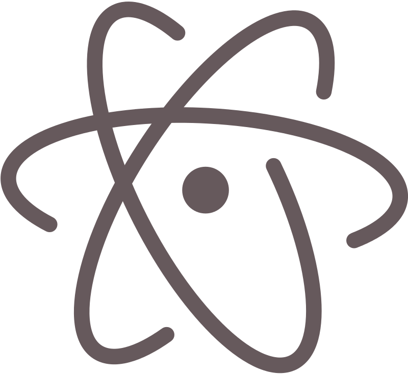

В 2016 году осуждение пользователей вызвали две предустановленные и включенные по умолчанию в Atom опции (пакеты), которые могли отсылать некую статистическую информацию на внешние серверы. Данные опции были переведены в режим, когда отсылка данных включается лишь после явного согласия пользователя, запрос которого производится при первом запуске среды:Пакет Metrics (метрики): Отсылает статистику использования в систему аналитики Google Analytics, данные включают в себя уникальный идентификатор инсталляции UUIDv4. Согласно авторам, эта возможность используется для определения производительности и чтобы знать, какие функции используются больше всего. Опция управляется через меню "Settings View" - metrics и отключение пакета.Пакет "Exception-reporting", который загружает отчеты о необработанных во внутреннем коде среды Atom исключениях на сервис bugsnag.com.
Atom (в прошлом Atomicity) — бесплатный текстовый редактор с открытым исходным кодом для Linux, macOS, Windows с поддержкой плагинов, написанных на JavaScript, и встраиваемых под управлением Git. Большинство плагинов имеют статус свободного программного обеспечения, разрабатываются и поддерживаются сообществом.Atom основан на Electron (ранее известный как Atom Shell) — фреймворке кросс-платформенной разработки с использованием Chromium и io.js. Редактор написан на CoffeeScript и LESS. Версия 1.0 была выпущена 25 июня 2015 г
